Speakers
Behrang is the Web Development Manager with the City of Santa Monica. He combines public sector experience, private sector business acumen, and technical know-how to provide pragmatic solutions. Behrang spearheaded Santa Monica's nationally top-ranked open data portal, and is heavily invested in working with businesses in Silicon Beach to co-create creative solutions using private-public partnerships as part of the Hack the Beach campaign.
Adnan Abdulhussein is a software engineer at Bitnami and a core member of the Helm team, where he helps to maintain the official Kubernetes Charts project. Adnan is also one of the maintainers of Bitnami's Docker images and Helm Charts, and has previously worked on several other cloud projects including the Bitnami Launchpads for Azure, Google and vCloud Air. Adnan is passionate about infrastructure, dev tools, Ruby, F/OSS, and the possibility of time travel. He holds a BSc in Computer...

Linux sysadmin and DevOps engineer. Fedora contributor.
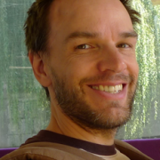
Christopher Aedo, Cloud Architect/Developer Advocate at IBM, is an IT veteran for consulting, design and technology companies. He is also an outspoken public advocate for OpenStack, cloud computing, software defined networking, and software defined storage. He's recognized as a community thought leader and has spoken at numerous OpenStack conferences in addition to speaking or participating on panels in multiple international conferences, including OSCon, CloudOpen, PuppetConf, and...

Rami is the DevOps engineer on the Public Cloud team at Workday where he works on building, deploying and managing Workday services and infrastructure on AWS using Cloud Native technologies.

Steve is a local (Central Coast) open source developer, engineering consultant, and educator, with expertise in open source hardware, software, development/process solutions, system architecture & cybersecurity, education/training, business process, community development (maker/hacker/DIY/etc), and applied earth science. Steve has a graduate degree in geophysics, is currently Principal Scientist at Vanguard Computer Technology Labs and former Allan Hancock Assoc. Faculty, and has worked...
I am a longtime Linux enthusiast with experience in virtualization, containers, and scaling services to meet user demands. I have an interest in Apache Mesos and Ubuntu MAAS and loves playing with different management tools like Ansible and Salt. While working at Mycroft AI, Inc. I've been able to experience the joy of building and deploying a complex open source software stack that runs on Linux.

Jono Bacon is a leading community manager, speaker, author, and podcaster. He is the founder of Jono Bacon Consulting which provides community strategy/execution, developer workflow, and other services. He also previously served as director of community at GitHub, Canonical, XPRIZE, OpenAdvantage, and consulted and advised a range of organizations including Huawei, GitLab, Sony Mobile, Deutsche Bank, HackerOne, and others. He is the author of the critically-acclaimed The Art of Community, is...
AJ Bahnken works on building reliable, performant, and secure systems at Procore. He works a lot on security, distributed systems, Linux, chasing down weird bugs and writes a lot of his tools in Go.

Keila Banks is an 15 year old web designer, programmer, videographer and publisher of content making use of mostly open source software. Featured on MSNBC's Melissa Harris-Perry show, keynote at OSCON 2015, PyCon Montreal, Texas Linuxfest, USENIX and subsequent viral video she has been talking the world by storm. She has been a part of SCALE since before birth as her mother manned the registration desk for SCALE 1 while pregnant with her. She, with the help of her father (Phillip Banks...
Since learning to program at 10 Phillip has spent a long career in technology covering many different industries but always coming back to his roots in advocating for youth in tech programs to get technology in front of our children at an early age. Serving in the open source community as one of the organizers of SCALE since its inception he now promotes youth programs around the world to do the same. Practicing what he preaches you will find his children speaking before companies,...

Josh Berkus spends his time messing around with containers, automation, and community-building for Red Hat Inc. Prior to that, he spent nearly two decades working on PostgreSQL. From his home in Portland, he cooks, makes pottery, and looks after a cat.
Louisa is the Marketing Director of System76. System76 is a Linux computer manufacturer, an advocate of open source software, and the producer of Pop!_OS, an operating system for makers, developers, scientists, and engineers.
Brian Bouterse is a Principle Software Engineer at Red Hat. He is a developer on Pulp which is written in Python and deploys Python software among other types (rpm, puppet, docker, etc). He also is a contributor to the Kombu project. Brian loves open source. He lives in Raleigh near NCSU with his wife Katie and his cat Schmowee.
As a Solutions Engineer at Convox, AJ Bowen is on a mission to containerize all the things and help others to do the same.
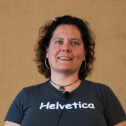
VM (ak Vicky) spent most of her 20 years in the tech industry leading software departments & teams, and providing technical management & leadership consulting for small and medium businesses. Now she leverages nearly 30 years of FOSS experience & a strong business background to advise companies about free/open source, technology, community, business, & the intersections between them.
She is the author of Forge Your Future with Open Source, the first book to detail how...

Yannick is a versatile computer engineer working mostly on open source projects. Recently, he has been helping the Chaire Mobilite lab at Polytechnique Montreal opening the code of their Transition plateform and working on their backend infrastructure. He has also teached embedded software development using OSS tools. And in his spare time, he's helping startups figure out their software development and infrastructure needs. Previously, he was a Production Engineer and Hardware System...
Ross Brunson is a NGINX. where he works on training, certification and documentation while balancing his second career as the father of a Ballerina. A skilled and experienced technical presenter, he works to provide sales and technical staff with the tools, education and support they need to solve customer problems using enterprise open source solutions.
Beginning in the US Army with work on Unix battlefield simulation systems, Ross has been a consultant, trainer and presenter for...

After installing Linux on his old i386 from a CD in the back of a Linux book he was given in 1995, Clint went on to be a Linux and open source power user. Splitting career time between software development and web scale operations gave Clint early insight into what is now known as the DevOps culture. Since then Clint has worked for Canonical on Ubuntu Server, HP on Helion OpenStack, IBM on OpenStack and BlueMix, and at GoDaddy bringing CI/CD and heavy automation to management of a 100,000+...
Kiyor has held Senior Architect and Infrastructure Engineering roles at content delivery networks, including ChinaCache and MaxCDN.
David Calavera is the CTO of Netlify where he and his team are building the best platform for deploying and automating modern web projects. Before that, he was a core member of the Docker Engine project, where he helped developers build the container engine that started the container revolution. David also built enterprise tools for GitHub and has contributed to numerous open source projects, such us Go, JRuby and many others.
Lee Calcote is an innovative product and technology leader, passionate about developer platforms and management software for clouds, containers, functions and applications. Advanced and emerging technologies have been a consistent focus through Calcote’s tenure at SolarWinds, Seagate, Cisco and Pelco.
An advisor, author and speaker, Calcote is active in the tech community as a Docker Captain and Cloud Native Ambassador.
Education Outreach team lead at Red Hat. Red Hat employee since 2001. Co-author of "Raspberry Pi Hacks" (O'Reilly, 2013). Formerly Fedora Engineering Manager, Fedora Packaging Committee Chair, Fedora Board Member, Fedora Engineering Steering Committee Member. In my spare time, I enjoy gaming, geocaching, pinball, hockey, and science fiction.

Thomas Cameron is an Open Source technologist with 27 years of experience. He's watched the information technology industry grow from PC servers and client/server architecture to distributed, to cloud computing. He's worked with technologies from Novell NetWare to Windows servers to Linux, and now the cloud. He is a senior solution architect at Amazon Web Services, and was previously a global technology evangelist at Red Hat.
Vagrant Cascadian is a Debian Developer since 2010, maintaining
packages such as u-boot, arm-trusted-firmware, and opensbi.
Starting In 2015, Vagrant built a diverse ARM build farm out of a
variety of single board computers for the Reproducible Builds project,
which now rebuilds thousands Debian armhf packages per day. As a
result, support for many of these boards is enabled in the Linux
kernel packages shipped in Debian, and some have debian-installer...

Alison is an automotive systems programmer and kernel engineer and has worked at Nokia, Mentor Graphics, Peloton Technology and Aurora Innovation. In 2014-2015, she collaborated on-site with a customer in Germany. Alison has spoken at events including ELC and ELCE, USENIX, LibrePlanet, linux.conf.au, Automotive Linux Summit, SCALE and Maker Faire. She lives in Mountain View , CA where she rides bikes, attends concerts, drinks beer and studies German.
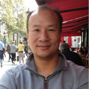
Andy Chan is a principal systems architect in Ticketmaster. He is currently part of the Cloud Enablement Team (CET) helping developers and devops migrating hundreds of products from decades old on-premise data centers into public cloud. His team builds a migration toolkit making the migration easier and faster.
Before joining Ticketmaster, Andy was a platform and software architect for a few well known dot com companies within Southern California. He is also a co-author of Apress...
Solomon is a MySQL certified DBA and a former director of LAMPSIG.
He works as a professional Database Administrator for Tivo in Alviso and is a co-author of the MySQL Cluster Certification Study Guide.

Colin Charles is the Managing Consultant at GrokOpen. Previously, Colin was on the founding team of MariaDB Server, and has been around the MySQL ecosystem including being an early employee at MySQL, and worked actively on the Fedora and OpenOffice.org projects. Colin has been a MySQL user since 2000. He's well known within open source communities, enjoys building business and market entry in APAC and has spoken at many conferences.
Pamela S. Chestek is the principal of Chestek Legal in Raleigh, North Carolina. She counsels creative communities on open source, brand, marketing and copyright matters. Prior to returning to private practice, she held inhouse positions at footwear, apparel, and high technology companies and was an adjunct law professor teaching a course on trademark law and unfair competition. She is a frequent author of scholarly articles, and her blog, Property, Intangible, provides analysis of current...
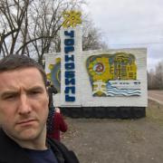
Engineer
I am a software developer for networking equipment. I am an active blogger on technologies that I pick up in my journey to be a cloud expert. Frequent speaker at local VMware User Group (VMUG) as well as vBrownBag. Awarded VMware vExpert 2015. OpenStack ATC (Active Technical Contributor) in which I submit bug fix for Neutron in my spare time. Currently looking at Docker and OpenStack Magnum.

Tennille Christensen is an attorney who specializes in advising start-ups on intellectual property issues and negotiating and drafting technology-related transactions. Tennille first entered the practice of law as a patent agent. However, she was constantly reading about and fascinated by non-patent-prosecution legal issues as well. One of the biggest areas that interested her, software copyrights and legal issues associated with the open source software community, is the reason she became...
Justin Colannino focuses his practice on patent, copyright, trademark, and trade secret litigation—particularly in the fields of computer hardware, software, and networked services. Justin also advises clients regarding open source software development, including open source license compliance. Justin has an active pro bono practice. In that capacity, he advises non-profit free and open source software projects on all aspects of open source development.
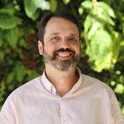
Mike works at Sysdig as a developer advocate focused on cloud native security. In this role he creates and delivers technical content aimed at helping practitioners operate more securely. Before joining Sysdig he worked at Google, AWS, Docker, VMware, and Microsoft in similar roles. In his spare time Mike enjoys running, motorcycles, music, and soccer.
Instructor at Kucera Middle School, earned doctoral degree in Educational Leadership with emphasis in Educational Technology. Dissertation: Acceptance of technology innovations in public education: Factors contributing to a teacher's decision to use free and open source software. Previous presenter at SCaLE, Southwestern Community College, Alliant International University, Point Loma Nazarene University & Harvey Mudd College.

Joe Conway is a technology executive with skills in a wide array of disciplines and extensive international business experience. He has been involved with the PostgreSQL community since 1998, presently as a PostgreSQL Committer, Major Contributor, and Infrastructure Team member. He is also the author and maintainer of a PostgreSQL procedural language handler for the R language, PL/R. Joe is currently Head of the PostgreSQL Contributors Team at Amazon Web Services, RDS Open Source Databases...
Danese Cooper kickstarted the modern era of InnerSource popularity with a keynote at OSCON 2015 in Portland, Oregon and “Getting Started With InnerSource”, a booklet (co-authored with O’Reilly Media’s Andy Oram) describing PayPal’s first experiment (which is currently the most popular downloadable asset on GitHub). She is currently a Distinguished Member of Technical Staff and Head of Open Source at PayPal. Previously Danese was CTO of Wikimedia Foundation, the first Chief Open Source...
Christine Corbett Moran is an AstroPhysicist and PostDoc Fellow at CalTech. She spent most of 2016 at the South Pole Telescope in Antarctica. Her current interest are in computational astrophysics, high performance computing, and big data visualization. Prior to completing her PhD in astrophysics from the University of Zurich, she worked at SpaceX, Open Whisper Systems, BBN Technologies, MIT CSAIL, MIT Media Lab, Lucent Technologies (Bell Labs Site), FAST Search and Transfer, UP Diliman, MIT...

Working with PostgreSQL since 1999. PostgreSQL Major Contributor.
Currently maintains the PostgreSQL JDBC driver.
Likes to test his knowledge of physics by driving his car on a racetrack.

Peter is a system engineer working as evangelist at One Identity, the company behind the syslog-ng logging daemon. He helps distributions to maintain the syslog-ng package, follows bug trackers, helps syslog-ng users, and talks regularly about sudo and syslog-ng at conferences (SCALE, FOSDEM, Libre Software Meeting, LOADays, etc.). In his limited free time he is interested in non-x86 architectures, and works on one of his PPC or ARM machines.
Nate has been working in the enterprise and mobile software industry for 13 years in various capacities as a developer and product management. In recent years his technology passions have focused around areas of mobile computer vision leveraging open source tools as well as the rise of the consumerization of IT Operations. Three years ago he started Reactor8 as consulting business with a friend to handle everything from application development, architecture design to the automation/...
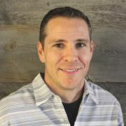
SVP, Platform and Technical Operations at Ticketmaster previously VP, Technical Operations at Shopzilla.

Owen DeLong is a Senior Manager of Network Architecture at Akamai Technologies and a member of the ARIN Advisory Council. Owen brings more than 30 years of industry experience. He is an active member of the systems administration, operations, and IP Policy communities. In the past, Owen was an IPv6 Evangelist at Hurricane Electric and has worked at Tellme Networks (Senior Network Engineer), Exodus Communications (Senior Backbone Engineer) where he was part of the team that took Exodus from a...
Creative, results-oriented, team player with over twenty years of system and software engineering experience. Strong track record of building and deploying compliant cloud computing infrastructure at scale, resolving complex issues, and delivering solutions in a fast moving, rapidly changing and high-pressure environment. Strong understanding of customers, industry trends, and systems architecture which meets customer’s needs while leveraging industry best practices and tooling.

Phil Dibowitz has been working in systems engineering for 15 years and is passionate about scaling systems and open source. He is currently a lead on the Operating Systems team at Facebook, responsible for the bare metal OS itself, configuration management and related infrastructure. Previously he worked on the traffic team automating load balancer configuration management as well as designing and building the production IPv6 infrastructure. Prior to Facebook, he worked at Google managing...
Caskey L. Dickson is a Site Reliability Engineer at Microsoft where he is part of the leadership team reinventing operations at Azure. Before that he was at Google where he worked as an SRE/SWE writing and maintaining monitoring services that operate at "Google scale" as well as business intelligence pipelines. He has worked in online services since 1995 when he turned up his first web server and has been online ever since. Before working at Google, he was a senior developer at...
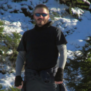
I am the lead consultant for Command Prompt, Inc.. I am also a Director for United States PostgreSQL and Software in The Public Interest. A Linux and PostgreSQL expert, I have been doing this Open Source thing for 20 years (Yes, really.). A Major PostgreSQL contributor, I have spent the majority for the last 15 years focusing on delivering PostgreSQL based solutions to the wider market.
edunham is an open-source geek of many trades, currently working as a Developer Advocate at Okta. This role has applied skills learned at the OSU Open Source Lab, Mozilla, and other organizations to demystify the worlds of identity and automation. Other hobbies include writing, gardening, and enjoying Oregon's outdoors.
Hello! My name is Christer. I build cool things. I also write, talk and teach about technology. My background has focused on working within the Linux and FreeBSD open source communities. I've specialized in server automation & configuration management, writing documentation and occasionally I make time for programming. I aspire to be the definition of "remote employee" while exploring the Western United States in my converted Promaster. What I do best is help others see how things could...

Rikki Endsley is an editor and community architect for Opensource.com. Previously she worked as a community evangelist on the Open Source and Standards team at Red Hat. Other hats she has worn include: tech journalist; community manager for the USENIX Association; associate publisher of Linux Pro Magazine, ADMIN, and Ubuntu User; and managing editor of Sys Admin magazine and UnixReview.com.
Vyki is a software developer, cartographer, and cyclist who fell in love with Los Angeles after landing in downtown in 2012. Raised in a college town on the east coast, she was introduced to advocacy early and has found herself pushing for change in a world that often shies away from progress.
In 2014 Vyki cofounded Compiler LA, a civic tech consultancy dedicated to building a better Los Angeles. Previously Vyki worked at NationBuilder building a national voter file to empower smarter...
Ian Eyberg is a founder @ DeferPanic and lives in SF. He has given talks at GopherCon, HighLoad++, OSCon, and DefCon. He is a heavy Go user. He was given his first Slackware floppies over 20 years ago but believes that the cloud of the future will not be based on the monolith but the unikernel.

Greg Farnum is a long-standing member of the core Ceph development team and founding Inktank engineer. He has served in many roles as Ceph grows and is currently a member of the Ceph Steering Committee and manager of IBM's CephFS group. Greg is passionate about solving problems in distributed computing and expanding the Ceph community.
David Fetter contributes to open source projects including PostgreSQL by helping organize communities, speaking publicly, and contributing code.
Charles Finley is President of Transformix which specializes in legacy application migration and modernization. He has over 40 years experience working in a number of different computing environments. Systems range from legacy COBOL and green screen based applications to cloud, web and mobile applications.
Senior Database Engineer with Crunchy Data Solutions. Author of several popular 3rd-party PostgreSQL tools such as pg_partman, mimeo, & pg_extractor
David Fligor is a co-founder and partner at the law firm of Progress LLP in Palo Alto, California. David regularly helps clients resolve intellectual property and contract disputes and advises clients on intellectual property ownership, licensing, compliance and enforcement. In 2016, David led an enforcement effort for the author of a GPLv2-licensed program against an embedded device manufacturer that had failed to comply with GPLv2 license conditions. The effort successfully achieved...

From humble beginnings as a PHP4 web developer in grade school, Amanda now works as a Developer Advocate at GitLab where she gets to share her passion for technology with others. When she's not speaking, writing, or shooing cats off her keyboard, you'll find her consuming APIs and IPAs.

Richard Fontana is Senior Commercial Counsel for Products and Technologies at Red Hat. In addition to serving as Red Hat's lead open source counsel, Richard provides general legal support for Red Hat's engineering and R&D organizations. Richard is a frequent public speaker on topics at the intersection of open source, law and policy. He is also a board member of the Open Source Initiative.
Jasmine Frost is an award winning, senior technology executive with over 17 years of experience. Ms. Frost is currently the Bureau Manager of Business Information Systems at the City of Long Beach where she oversees the essential application support provided to all City departments.
Ms. Frost has extensive experience having worked in both local government as well as the private sector. Prior to joining the City of Long Beach, Jasmine was the IT Chief of Staff for the City of Palo...
Jeff worked at various early and late stage startup through the mid 90s to early 2000s before founding a system and network consulting company, then joining forces with some other PostgreSQL contributors to form PostgreSQL Experts, Inc. where he served as CTO for 7 years.
Jeff now works as the Senior Director of Site Reliability at Procore Technologies in Carpinteria, CA and continues to help the community with PostgreSQL RPM packaging.

Richard Gaskin is the owner of Fourth World Systems, a software design and development consultancy in Los Angeles. Since founding the company in 1994, he's developed dozens of commercial and open source applications used by a wide range of organizations, including FedEx, AOL, the US Library of Congress, and thousands of hospitals and universities around the world.
Although he started his career with Mac OS, Richard has since delivered applications for Irix, every version of...
Amber began her personal journey into open source in 2009, when she began blogging about her experiences with Ubuntu, filing bugs, organizing and speaking at various Linux events, and more. Amber insists that the days of “by the techie for the techie” in Linux and open source are gone and encourages anyone who wants to contribute to a project to do so.
Amber is a co-author of the Official Ubuntu Book and a technical reviewer of Art of Community and has written for other publications...
John Gravois is a geographer turned programmer. He has a tattoo of a California Raisin and when he's not in front of a computer you can often find him tangled up in poison oak somewhere near his mountain bike.

Brendan Gregg is a senior performance architect at Netflix, where he does large scale computer performance design, analysis, and tuning. He is the author of Systems Performance published by Prentice Hall, and received the USENIX LISA Award for Outstanding Achievement in System Administration. He has previously worked as a performance and kernel engineer, and has created performance analysis tools included in multiple operating systems, as well as visualizations and methodologies.

Magnus Hagander is a member of the PostgreSQL Core Team and a developer and code committer in the PostgreSQL Global Development Group.
Magnus is one of the original developers of the Windows port of PostgreSQL. These days, he mostly works on other parts of the PostgreSQL backend, recently with a focus on security features, monitoring and backup/replication interfaces and tools.
He is also one of the core members of the postgresql.org infrastructure team, maintaining the servers...

Nathan Haines is an author, instructor, and computer consultant who fell in love with Ubuntu in 2005, and helped found the Ubuntu California Local Community Team to share that excitement with others. As the leader of the California team and a member of the Ubuntu Local Community Council, he works to help others support and share Ubuntu worldwide.
His mission to educate and excite people about Free Software and Ubuntu continues with his book, Beginning Ubuntu for Windows and Mac Users...

Andrew Hall is a co-founder of Hall Law, a boutique firm focused primarily on legal issues facing open-source software. Leveraging his technical background in computer science and electrical engineering with his well-rounded intellectual property law experience, Andrew provides counsel in strategy, policy implementation, and asset management to clients, including Fortune Global 500 companies.

Michael Hall is an open source software developer, community manager and technology evangelist. He has extensive experience in developing desktop and web-based software in a large variety of languages and frameworks, and contributes to a number of open source projects and communities. He currently works at The Linux Foundation, as a community manager and developer advocate for the EdgeX Foundry project.
Nathan is a Site Reliability at Reddit, where he works to architect highly scalable and reliable systems that can be efficiently managed and observed. He has been involved with the open source community for nearly two decades, primarily through his roles as an Ubuntu and Debian GNU/Linux Developer and a member of the freenode IRC staff. Previously, he worked as a Developer Advocate/Software Engineer at Orchid Labs building an open marketplace for bandwidth on Ethereum, and as a Site...

der.hans is a Free Software, technology and entrepreneurial veteran. He is a repeat author for the Linux Journal with his article about online privacy and security using a password manager as the cover article for the January 2017 issue.
He is chairman of the Phoenix Linux User Group (PLUG), BoF organizer for the Southern California Linux Expo (SCaLE) and founder of the Free Software Stammtisch.
He presents regularly at large community-led conferences (SCaLE, SeaGL, Tux-Tage,...
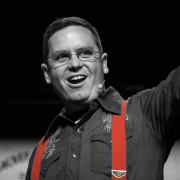
Nathen Harvey, VP of Community Development at Chef, helps the community whip up an awesome ecosystem built around the Chef platform. Nathen also spends much of his time helping people learn about the practices, processes, and technologies that support DevOps, continuous delivery, and high velocity organizations. Prior to joining Chef, Nathen spent a number of years managing operations and infrastructure for a diverse range of web applications. Nathen is a co-...

John 'Warthog9' Hawley led the system administration team on kernel.org for nearly a decade, leading a team including four other administrators. His other exploits include working on Syslinux, OpenSSI, a caching Gitweb, and patches to bind to enable GeoDNS. He's the author of PXE Knife, a set of interfaces around common utilities and diagnostics tools needed by an average systems administrator, as well as SyncDiff(erent) a state-full file synchronizer and file transfer...
Faithful attendee of SCaLE since 7x!
On the job, Kelly writes production code in C++, Java, Scala, and SQL. In open source, she has contributed patches to wxWidgets, torvalds/subsurface-divelog, and msysgit.
Serving on the Infrastructure team at Radius in 2016 meant greater exposure to Docker, Kubernetes, Consul, and therefore Golang. Hence, Golang now occupies a good chunk of Kelly's free time and imagination.
More gory professional details at:
...
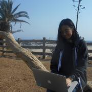
Proud is currently an undergraduate junior at University of California, San Diego studying Math-Computer Science. She is interested in the intersection between the open source community and gaming for STEM (science, technology, engineering, and mathematics) education; aspiring to make technical knowledge as relatable and enjoyable to learn to different audiences. As a past intern with {code} by Dell EMC, she contributed to the development of an Amazon Web Services Elastic Block Storage...
Tejun has been working on various aspects of Linux kernel since 2005 and is currently maintaining libata, percpu memory allocator, workqueue, and control group. He currently works as a software engineer for Facebook.
Christian has been involved in the Free Software community since the late 90's. He has worked on a wide range of desktop and server technologies for GNU/Linux. He worked on Gtk+ based applications while at VMware and Red Hat and contributes to GNOME and associated technologies. He is also the author of the official MonogoDB C driver.
In the summer of 2014, Christian quit his job to build a new IDE for the GNOME desktop, called Builder.
Luis Hernandez began working in education in 2006 and began to see the great need for innovative teachers. He has been an avid user of Linux and open source for as long as he can remember. He also tries to help show new users the ease and beauty of Linux.
While studying multi-media,ranging from computer graphics to 3D animation, he began to focus greatly on cyber security as this was a field that was in desperate need of specialist. Soon he found himself working with after school...

Jason Hibbets is a senior community architect at Red Hat which means he is a mash-up of a community manager and project manager designing programs for people to participate in communities. His current role involves building community interest for #EnableSysadmin--a watering hole for system administrators. He is the author of...
As a leader in open data, education, community-building, and civic innovation, Jeanne Holm empowers people to discover new knowledge and collaborate to improve life on Earth and beyond. Jeanne is the Deputy CIO and Senior Technology Advisor to the Mayor for the City of Los Angeles, bringing technical innovations to 4 million people. She was formerly the Evangelist for Data.Gov for the White House, the leader for African open data for the World Bank, and the Chief Knowledge Architect at NASA...
Adam Holt is a computer scientist who was OLPC's Community/Support Manager, has served schools in Haiti, traveled the world building an understanding of technology around developing world schools, and catalyzes Internet-in-a-Box communities worldwide. He hopes you too will seize the day, unleashing grassroots learning libraries in all countries.
Jonah Horowitz is a Senior Site Reliability Architect at Netflix with over 20 years of experience keeping servers and sites online. He started with a home-built BBS and has worked at both large and small tech companies including Walmart.com, Looksmart, and Quantcast.

Michael Hrivnak is a Principal Software Engineer at Red Hat. After leading development of early registry and distribution technology for container images, he became involved with solving real-world orchestration problems on Kubernetes. He now works on the Automation Broker and Operator SDK, projects that automate application management on Kubernetes by incorporating tools such as Ansible and Helm. Experienced in both software and systems engineering, Michael is excited to be writing software...

Ryan Jarvinen is a Developer Advocate at Red Hat, focusing on improving developer experience in the cloud native community. He lives in Sacramento, California and is passionate about open source, open standards, open government, and digital rights.
St. John has been at Yahoo for over six (6) years, where he is currently the product owner and lead contributor for the central continuous delivery system, Screwdriver. He has been writing in Node.js for almost four (4) years now and before that in PHP for nine (9) years. In his spare time, he also hacks around home automation.

Elizabeth K. Joseph leads the Open Source Program Office for IBM Z (mainframes!). Previously, she spent time working on Apache Mesos, and four years as a systems engineer on the OpenStack Infrastructure team and six years on the Ubuntu Community Council and has held various roles in the Ubuntu community and is the co-author of The Official Ubuntu Book, 8th and 9th Editions. At home in San Francisco, she sits on the Board of Directors for Partimus.org, a non-profit in the Bay Area providing...
Alex Juarez is a Principal Engineer at Rackspace, touting 10 years with the company. Alex enjoys all things Linux, especially training and mentoring others, and is incredibly qualified to do so as an RHCA/RHCI. When Alex isn't helping others he's crafting killer cocktails and finding the best spots to grub in San Antonio.

Frank Karlitschek is a long time open source developer and former board member of the KDE e.V. In 2016 he founded Nextcloud to create a fully open source and decentralized alternative to big centralized US cloud companies. In 2012 he initiated the User Data Manifesto to define basic human rights regarding personal data. Frank was an invited expert at the W3C to help to create the ActivityPub internet standard. Frank has spoken at MIT, CERN, Harvard and ETH and keynoted several conferences....
Nina is a site reliability engineer at Procore Technologies, where she works every day to maintain the performance, scalability, security, and dependability of the services and solutions Procore offers. She is passionate for bug sleuthing and solving challenging problems that arise, and endeavors to share her enthusiasm with others through mentoring college students as well as speaking about her experiences in the field.

Kohsuke Kawaguchi is the creator of Jenkins and co-CEO of Launchable. He is a well-respected developer and popular speaker at industry and Jenkins community events. Kawaguchi’s sensibilities in creating Jenkins and his deep understanding of how to translate its capabilities into usable software have also had a major impact on CloudBees’ strategy as a company, where he served as CTO. Before joining CloudBees, Kawaguchi was with Sun Microsystems and Oracle, where he worked on a variety of...
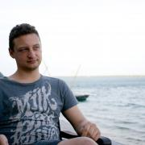
Ben Kero is an engineer and avid tinkerer. He attended Oregon State University and spent way too much time at OSU's Open Source Lab as a community system administrator. He has been running Linux on his desktop and servers continuously since 2006, fixing systems when they break and relishing in the delight of when they don't. By now he should have run into every bug possible, and found ways of fixing most of them. By way of a day job he is a Senior Devops Engineer at Brave Software...
Avni Khatri is Sr. Director of Education in GitHub's Developer Relations organization, helping learners access the tools and resources they need to successfully build software products. Avni is passionate about working with learners and educators of all kind to make coding available to the next generation of developers around the globe. She also volunteers with Internet-in-a-Box.
Dan Kimmel is a ZFS contributor and the filesystem team manager at Delphix, a leader of OpenZFS (the cross-platform open source ZFS community). His projects have focused on the filesystem block cache and the replication system. Dan's team has led efforts around block allocation, caching, programmability, and many other aspects of ZFS functionality and performance.
Grant Kirkwood is the founder and CTO of Unitas Global, a provider of custom Enterprise Cloud solutions for organizations around the world. The company offers its solutions to mid- and large-size enterprise, operating from 35 datacenter deployments worldwide.
A serial entrepreneur and technologist at heart, Grant has always been at the forefront of open source technologies. His first company began offering web application development and hosting based on open source technologies in...
Jim Klein is currently the Chief Technology Officer for the Las Virgenes Unified School District. Through over two decades of IT experience, Mr. Klein has become widely renowned as an aggressive technology leader, particularly in the areas of open source. He has written a number of articles for industry magazines, and serves on a number of national and international committees and panels. Mr Klein has been recognized as a T.H.E. Journal Innovator, NetworkWorld All Star, and a National School...
Koda Kol is IT Professional and Educator.
Yolanda Kol is an educator based in Los Angeles, CA. Her mission is focused on ensuring academic opportunities to overcome the achievement gap by bridging the digital divide. Topics of interest include: open-source educational resources, women in technology, and the impact of technology in employment and higher education.
Kirill Kolyshkin was named leader and project manager for the OpenVZ project in 2005 to further the adoption of containers virtualization for Linux. He spearheads the overall development and manages all key architecture, updates and feature upgrades for OpenVZ. Kolyshkin has more than 10 years Linux experience and has long been an active open source advocate. He is a frequent speaker about virtualization technology and his 15-years career experience includes positions in information...

Ilya Kosmodemiansky is a CEO and co-founder at Data Egret. A consultancy specializing in PostgreSQL migration, maintenance and support.
Ilya has a broad experience working with PostgreSQL as consultant, architect and administrator. His main focus is database performance and optimization. He sees the mission of PostgreSQL in substituting the commercial databases in high-performance mission-critical applications.
His interests are promoting PostgreSQL as enterprise-ready database...
Liz Krane is a freelance web developer, programming instructor, and founder of Learn Teach Code, the largest educational tech meetup in SoCal that's dedicated to empowering aspiring developers to lead their own local tech events and study groups where anyone (especially beginners) can learn and teach together, creating stronger, more diverse tech communities.

Bradley M. Kuhn is the Policy Fellow and Hacker-in-Residence at Software Freedom Conservancy (SFC). Kuhn began volunteering in the software freedom movement in 1992 — as an early adopter of Linux and contributor to many FOSS projects including Perl. As Free Software Foundation (FSF)'s Executive Director from 2001-2005, Kuhn led FSF’s GPL enforcement and invented the Affero GPL. Kuhn was SFC’s primary volunteer from 2006–2010 and its first...

Intending to become a programmer, Dustin got sidetracked and spent more time than he cares to admit doing theoretical physics and mathematics with no relevance to software. He's better now.
Some little-known facts about Dustin Laurence:
He first used a computer playing Colossal Cave Adventure and the
bootleg Fortran IV version of Zork over a glass teletype and an
acoustic modem.
His first good programming language was C. He lies and...
Phillip Leclair is the CIO for the City of Pasadena and is responsible for leading innovation initiatives through use of technology, creating new online and mobile service delivery models, and maintaining effective IT operations. He’s been a champion for Open Data and spearheaded the first City sponsored hack-a-thon tied with the launch of the City’s Open Data site in 2014. Prior to the City, Phillip held positions as a consultant for an IT Management and Strategy consulting firm and with...

Gina Likins has been working in internet strategy for more than 20 years, participating in online communities for nearly 25, and working in open source for more than three. Back in 1994, she presented her first talk about the internet, called "Netiquette: How to avoid getting flamed online," and she's spent the intervening time developing her own theories about how and why communities go sour (or conversely, grow strong).
Aside from her interest in the internet,...
Peter Linnell is a Sr. System Engineer for SUSE. He has fifteen plus years of experience in open source projects, as a founder, project leader and most recently a member of the openSUSE Community Board. Before joining SUSE, he worked in Software Engineering at Cloudera - the Hadoop Big Data startup in Silicon Valley. Prior to returning to the US, he spent almost a decade living in Europe in the UK and France. While in France, he was a project manager at INRIA (National Institute for Research...

Federico Lucifredi is the Product Management Director for Ceph Storage at Red Hat and a co-author of O'Reilly's "Peccary Book" on AWS System Administration. Previously, he was the Ubuntu Server product manager at Canonical, where he oversaw a broad portfolio and the rise of Ubuntu Server to the rank of most popular OS on Amazon AWS. A software engineer-turned-manager at the Novell corporation, he was part of the SUSE Linux team, overseeing the update lifecycle and...

Bryan Lunduke writes books about Linux. Then he writes articles about Linux. Also podcasts about Linux. Rumor has it he also does marketing work related to Linux. Linux, Linux, Linux. Plus Linux.
I'm an early engineer at Rancher Labs, where I maintain its Kubernetes distribution. I have been involved in the Container ecosystem for 2 years. During this time, I have contributed to various open source projects, notably the log driver framework for Docker, and cloud provider enhancements in Kubernetes. I love to share my thoughts and insights gained from building and running container orchestration systems.
Guy Martin is Director of the Open@ADSK initiative at Autodesk, responsible for overseeing the company's open source strategy, execution and collaborative projects, as well as representing the company in open source communities and organizations. He has over two decades of experience in the software industry, where he has consistently focused on helping companies understand, contribute to, and better leverage open source software.
Martin has held...

After several years in Japan, Justin Mayer now designs and builds software products in Santa Monica. He is an active open-source contributor and the primary maintainer of Pelican, a popular static site generator.

Grant McAlister is a Senior Principal Engineer at Amazon Web Services where he works on RDS - Amazon's Relational Database Service, the service he helped found 9 years ago. Prior to AWS, Grant was responsible for the performance, scalability and availability of Amazon's databases. Before joining Amazon.com in 1999, Grant worked as an Independent Database Consultant and as a Senior Principle Consultant for Oracle Corporation. He earned a B.S. in Computer Science at the University...
Scott has been an avid PostgreSQL user, DBA, Developer & contributor for over 12 years. His focus is on production, designing systems that allow "always-on" maintenance, carrier-grade reliability and ultra-wide scalability.
Carlos Meza has gone from sysadmin to developer. At Verizon, he managed large scale infrastructure for the EdgeCast CDN. As an SRE for Everbridge, he was responsible for systems that provided real-time alerting for those in life-threating situations. At Disney, he has developed tools for auditing for compliance and security.
Carlos is a long-time member of the SGV Linux User Group; runs the Software Engineering Meetup in Los Angeles; mentors at Girls Who Code.
For fun, he...
Adam Miller is a member of the Fedora Engineering team focusing on Fedora Release Engineering tooling. His work includes next-generation build systems, automation, and infrastructure. Adam has completed his Bachelors of Science in Computer Science and Masters of Science in Information Assurance and Security, both from Sam Houston State University. He is a Red Hat Certified Engineer (Cert# 110-008-810), and an active member of the open source community with a running history of contributions...
Bruce Momjian is co-founder and core team member of the PostgreSQL Global Development Group, and has worked on PostgreSQL since 1996. He has been employed by EDB since 2006. He has spoken at many international open-source conferences and is the author of PostgreSQL: Introduction and Concepts, published by Addison-Wesley. Prior to his involvement with PostgreSQL, Bruce worked as a consultant, developing custom database applications for some of the world's largest law firms. As an...
Tim Moody is a serial entrepreneur and technology enthusiast. He spends most of his time trying to make Internet in a Box useful to children and adults who lack a connection to the World-Wide-Web. He dreams of a day when the Library of Alexandria and the House of Wisdom are in everyone's hands.
Ken Moore is a developer on the PC-BSD project with a strong focus on user-interface design and implementation. He lives in Tennessee with his wife and two kids, and enjoys woodworking whenever he has spare time.

I am a Linux Systems Administrator, I've been a user of GNU/Linux for my
own personal use since the late nineties. I've used many distributions over
the years, starting with Slackware, up to the latest Red Hat and Ubuntu
releases.

Joe is a security researcher who loves to experiment with embedded devices, signals, and really anything with electrical signals. He lives in a server room and would love to be let out from time to time. When not stuck in a server room or being electrocuted he also dabbles with cloud research. He is currently a full time student at California Polytechnic Pomona.
Stella current works as a Data Services Manager. Her primary responsibilities center around setting direction for and implementing a reporting solution for internal and external use. Prior to this, Stella has worked within several Data Warehousing and Business Intelligence teams.
Michelle Noorali is a software engineer at Deis and a core maintainer on the Kubernetes Helm project. She co-leads SIG-Apps which is the Kubernetes special interest group for running and managing applications and workloads on Kubernetes. She is primarily a Go developer but has Ruby roots. Michelle's background is in Computer Science and startups. You will most likely catch Michelle in the process of moving to a different city because she is consumed by wanderlust or working on...
Duane O’Brien is an independent researcher focused on open source funding and sustainability. He loves driving this passion through collaboration and conversation. Duane is a force of chaotic good, using his high stats in intelligence and charisma to advocate for the open source community.
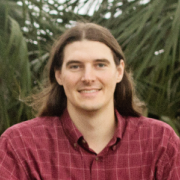
Alan started programming when he was four years old on his dad's Commodore 64 and began using Linux in the mid-90s while in high school. He currently works for SoftIron, a Silicon Valley startup making the world's finest appliances for the data center, including scale-out storage hardware running Ceph. Alan is the creator and maintainer of M-Stack, a free and open source USB device stack for PIC micocontrollers, and HIDAPI, a cross-platform host-side USB HID library; and is a...

Adrian serves as a Distinguished Architect at Rackspace. He is an active technical contributor to OpenStack, the chair of the OpenStack Containers Team, and PTL of OpenStack Magnum. In his free time he serves as a coordinator for the Docker Los Angeles Meetup group. Adrian is passionate about next generation cloud technology, and believes that true collaborative development is significantly more powerful than individual companies working in isolation.
See also:
...
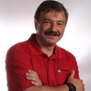
Dmitri Pal is an Engineering Director at Red Hat. He is responsible for security and identity management projects and products provided as a part of Red Hat Enterprise Linux ecosystem. This includes IdM (FreeIPA), SSSD, Samba, Kerberos, Directory Server, Certificate System, OpenSCAP, SELinux and Crypto libraries. Dmitri is also responsible for security and identity related cross-product integration efforts. Dmitri has more than nineteen years of security and identity management experience....
Anand Babu (AB) Periasamy is a free software contributor, angel investor and an entrepreneur. AB is one of the founders of Minio, an open source cloud storage server. Prior to Minio, AB co-founded Gluster, an open source distributed filesystem. In 2004, as the CTO of California Digital Corp., AB led the development of world’s second fastest Supercomputer code named “Thunder”. AB is also on the board of Free Software Foundation - India and has authored GNU FreeIPMI and GNU FreeTalk.

Jerome is a senior engineer at Docker, where he helps others to containerize all the things. In another life he built and operated Xen clouds when EC2 was just the name of a plane, developed a GIS to deploy fiber interconnects through the French subway, managed commando deployments of large-scale video streaming systems in bandwidth-constrained environments such as conference centers, operated and scaled the dotCloud PAAS, and various other feats of technical wizardry. When annoyed, he...

Stormy Peters leads the Community Leads team at Red Hat. Previously at SCALE she has given the "Would you do it again for free?" keynote as well as several talks on community management.
Stormy is passionate about open source software and educates companies and communities on how open source software is changing the software industry. She is a compelling speaker who engages her audiences during and after her presentations.
Before joining Red Hat, Stormy was VP of...

Christophe has been working with PostgreSQL since 1997. He is the CEO of PostgreSQL Experts, Inc.

People person, technology enthusiast and all-things-open evangelist. I have managed and marketed communities for more than a decade, getting started in the KDE community, followed by working as openSUSE Community Manager at SUSE and co-founded Nextcloud. At Nextcloud I head up our marketing efforts, writing, speaking at and organizing...
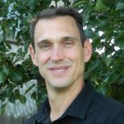
Matt Porter is the CTO of Konsulko Group, working on the design and development software for embedded Linux based systems. Matt specializes in the Linux kernel and associated FOSS middleware that provides the plumbing for applications. Outside of work he hacks on various random Linux kernel drivers and subsystems. Matt has spoken at previous conferences on the topics of userspace drivers, Android, Linux 6502 remote processors, kernel testing, USB gadget configfs, kernel upstreaming, and...

Brian Proffitt is currently the Senior Manager, Community Outreach team for Red Hat's Open Source Program Office. A long-time member of the free and open source software community, Brian is the author of several books on Linux, iOS, and other odd operating systems, as well as former technology journalist from ReadWrite, ITworld, LinuxPlanet, and Linux Today.

Corey is the Chief Cloud Economist at The Duckbill Group, where he specializes in helping companies improve their AWS bills by making them smaller and less horrifying. He also hosts the "Screaming in the Cloud" and "AWS Morning Brief" podcasts; and curates "Last Week in AWS," a weekly newsletter summarizing the latest in AWS news, blogs, and tools, sprinkled with snark and thoughtful analysis in roughly equal measure.

Kyle Rankin is a security and infrastructure expert with over two decades of professional Linux experience. He is the author of How To Write A Tech Book, The Best of Hack and /: Linux Admin Crash Course, Linux Hardening in Hostile Networks, DevOps Troubleshooting, The Official Ubuntu Server Book, Third Edition, Knoppix Hacks, 2nd Edition, and Ubuntu Hacks, among other books. Rankin was an award-winning columnist and tech editor for Linux Journal, and speaks frequently on Free and Open Source...
Adam Reese is a core maintainer for the Kubernetes Helm project. As a Senior Engineer at Deis, he has contributed to many open source projects. Over his career, Adam has built everything from distributed pipeline processors to guitar effects pedals. When he is not slaving away in the code mines, Adam enjoys mountain biking, playing guitars, and spending time with his wife, daughter, and Australian Shepherd.

Bob Reselman is an internationally known software developer, system architect, industry analyst, courseware developer and technical writer/journalist. He is presently Senior Technical Analyst at Blockchain Journal. Bob has written a number of books and hundreds of articles on a variety of indepth technical topics for publications such as Red Hat Architect, DevOps.com, TechTarget, and DZone to name a few. Bob is one of Instruqt's premiere development partners. He has also...

22-year old guy who is currently a Sr. Developer Support Engineer for Auth0, and member of the Ubuntu Community Council. Actively participating on the Ubuntu Project, loves photography and food.

I motivate, mobilize, and connect cross-functional teams with technical solutions and support and provide customer-focused Computer Professional services with System Administrator experience in commercial and non-profit industries.
I deliver system, network, and security support in a wide variety of business and home environments. I partner with clients for training and end-developer support efforts, especially in the areas of configuration management, operating system integration...
John Roman is a RHCSA and Security+ accredited systems administrator at The RAND Corporation, with more than a decade of experience in Linux systems administration and an extensive background in high availability services, proactive monitoring, and centralized configuration management in a devops environment.
Futurist. Hollywood producer, technologist and journalist.

Nithya Ruff is the Senior Director of Comcast's Open Source Practice. Her charter is to drive common open source practices and strategy across Comcast. She is also Director-at-large on the Linux Foundation Board of Directors. She first glimpsed the power of open source while at SGI in the 90s and has been building bridges between hardware developers and the open source community ever since. She’s also held leadership positions at Western Digital, Wind River (an Intel Company),...
Baruch Sadogursky (a.k.a JBaruch) is developer advocate at JFrog, the Artifactory binary repository creators, and winner of the JavaOne and Duke Choice Awards.
For the past dozen years he has served as a frequent speaker, blogger and coder for Artifactory and Bintray, and has loved every moment of it.
Baruch is @jbaruch on Twitter and a blogger on http://www.jfrog.com/blog/ and http://blog.bintray.com...
Allen joined SanDisk in 2013 as an Engineering Fellow, he is responsible for directing software development for SanDisk’s system level products. He has previously served as Chief Architect at Weitek Corp. and Citrix, and founded several companies including AMKAR Consulting, Orbital Data Corporation, and Cirtas Systems. Allen has a Bachelor of Science in Electrical Engineering from Rice University.

Karen M. Sandler is Executive Director of the Software Freedom Conservancy, the nonprofit home of dozens of essential free software projects. She is known for her advocacy for free and open source software, particularly in relation to the software on medical devices. She was previously the Executive Director of the GNOME Foundation. Karen co-organizes Outreachy (formerly Outreach Program for Women). She received an O'Reilly Open Source Award and is co-host of the oggcast "Free and...

Clint currently works for Red Hat on the Continuous Infrastructure team. He's previous work included The Linux Foundation, an independent Linux consultant, trainer, developer, and community organizer.
In 2006, Clint founded the Utah Open Source Foundation and Utah Open Source Conference (now called OpenWest) to help grow Free and Open Source Software in Utah and the Mountain West. The conference and community have grown consistently every year.
Sergio works at Canonical and is the lead for snapcraft, he has been dedicating his time to all things snappy, these days mostly focused on the developer experience around it. He has previously been more involved in Ubuntu Core and the core of snapd itself; he came from working on the Ubuntu Phone effort as part of the Phone Foundations team advocated to the plumbing layers.
He has previously worked for Intel and Motorola with similar software engineering roles.
...
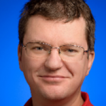
Konstantin (Kostya) Serebryany is a Software Engineer at Google. His team develops and deploys dynamic testing tools, such as AddressSanitizer, MemorySanitizer, ThreadSanitizer, and libFuzzer. Prior to joining Google in 2007, Konstantin spent 4 years at Elbrus/MCST working for Sun compiler lab and then 3 years at Intel Compiler Lab. Konstantin holds a PhD from mesi.ru and a M.S. from msu.ru.

Nick Shadrin is a web application delivery professional with many years of international experience. He has worked in various roles for major IT vendors and cloud companies, and currently resides in San Francisco where he works as a technical solutions architect for Nginx. Nick has implemented website optimization systems for well-known websites and major enterprises.
Ty works with SMBs to achieve compliance for PCI and SOC2 standards. He has been working in the industry for over 25 years as a programmer, systems architect, and manager of development, IT and DevOPs teams. He was a cofounder of Kagi, an e-commerce company based in the San Franciso Bay Area where he worked on Payment systems for 15 years. He was one of the original team members of LoopPay (a.k.a SamsungPay Boston) where he was a Director of Security and Compliance for 5 years. When he is...
Eduardo is an entrepreneur and software engineer. He is currently one of the Fluentd project maintainers and creator of Fluent Bit, a lightweight Logs and Metrics processor. He also is the founder of Calyptia (the Fluent company).
I have been working as a postgres DBA at OmniTI for almost 4 years. I completed my Masters in CS from University of Maryland in 2014, and current a Doctoral student researching data mining in cybersecurity.
Ryan Sipes is a community builder, open source evangelist, and longtime Linux user. After working on artificial intelligence platform Mycroft A.I., he has joined System76 as their Community Manager. At System76, Ryan is working to usher in the long prophesized year of the Linux desktop.

John is the VP of Technology for Infinity Interactive, a technology consultancy and bespoke software development shop. When he's not madly trying to keep up with the pace of change in Javascript development, maintaining Perl modules, or tweaking his Emacs config, he likes to play around with new languages like Swift and Rust and write about himself in the third person.
I'm a software engineer on the Infrastructure team at Neuralink. We're building a medical device to help folks with spinal cord injuries control their computer with their thoughts alone. I love working on tough distributed systems problems, and learning from my team and the community! I have been a fond user and contributor to Open Source for over 15 years, with no plans on stopping anytime soon.
Previously, I was the Site Reliability Engineering tech lead at Slack, the ...

Dave Stokes is an open-source software and database fan. He has worked at companies ranging alphabetically from the American Heart Association to Xerox, has three college degrees, enjoys riding his Honda Goldwing motorcycle, lives in North Texas, and started with UNIX in the Version 7 days. He is the author of MySQL & JSON - A Practical Programming Guide, which is available at Amazon.com
John Sullivan is an independent free software activist and consultant, with specialties in communication, community organizing, licensing, fundraising, strategic planning, and nonprofit governance. He is a Debian Developer, and member of its keyring team. Previously, he worked for the Free Software Foundation for over nineteen years, including two as its union steward and eleven as its executive director. Prior to the FSF, John worked as a speech and debate instructor for Harvard,...
Pono is systems administrator for the Apache Software Foundation. He studied math and physics with a focus in mathematical modeling and error correcting codes. Career interests are in providing open alternatives for infrastructure to FOSS projects, applying mathematical models to webscale problems and encouraging the replacement of closed scientific code with projects like Julia and Sage.

Monty is a long time Free Software Hacker and a Distinguished Technologist at HP. He is founder and currently a core team member of the OpenStack Infrastructure program which runs OpenStack's massively scalable dev/test and CI system. You should never let him name projects, because if you do, you'll end up with something like "jeepyb" or "TripleO". Before OpenStack he was a MySQL consultant and a core dev on the Drizzle fork of MySQL. Outside of technology,...

Robinson has over a decade of experience in FOSS development, organization, & outreach, with an emphasis on Serious Games in medicine, security, & higher education.
Currently serving as the Director of Open Source Strategy at the LOT Network, he was the Senior QA Engineer for The Document Foundation, the German non-profit behind LibreOffice & DLP, as well as coordinator of community outreach & education. At the Interactive Media Lab at the Geisel School of Medicine, he...
Working in Linux has been a passion of mine since I was in highschool. Building my first computer at the age of 15 spurned my curiousity with computer hardware and software technology and through time my passion expanded into the work place and brought about job opportunities. I am currently a Sr. Cloud Engineer as well as a professional photographer and throroughly enjoy using FOSS software for my professional ventures.

Brad Urani loves talking, tweeting and blogging about software almost as much as he loves creating it. He's a veteran of 5 startups and a frequent conference and meetup speaker. He lives in Santa Barbara, California where he preaches the wonders of open source as principal engineer at Procore.
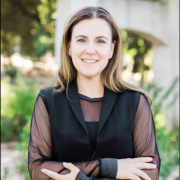
Heather VanCura leads the JCP Program at Oracle, and is a leader of the global community driven adoption and user group programs. Heather drives the efforts to transform the JCP program and broaden participation and diversity in the community. She is passionate about Java, women in technology and developer communities, serving as an international speaker and community organizer of developer hack days around the world. Heather enjoys speaking at conferences, such as OSCON, FOSDEM, Devoxx,...
Peter was a co-founding member of the Heroku Postgres team, where he helped to build a service that run something like a million PostgreSQL databases. He travels the world speaking mostly on scaling start-ups, and PostgreSQL. Before joining the Heroku team, he worked as an oceanographer, a game developer, and in media player development. He lives in San Francisco, California and grew up in British Columbia, Canada.

I have been contracting for DENX Software Engineering for a couple of years now. My primary responsibility is designing and implementing customer specific functionality. One important aspect of my work is leveraging the benefits of working inside the mainline Linux, U-Boot and Yocto projects, explaining our customers the benefits of pushing the newly produced code back into mainline and effectively doing the contributions. I am therefore heavily involved with both mainline U-Boot and Linux...

David is an AI/ML Engineer at DigitalOcean, where he’s dedicated to empowering developers to build, scale, and deploy AI/ML models in production environments. David brings deep expertise in building and training models for applications like NLP, data visualization, and real-time analytics. His mission is to help users build, train, and deploy AI models efficiently, making advanced machine learning accessible to developers of all levels.
I also have a background in storage drivers/...

Stephen is a principal program manager in the Azure Office of the CTO and adjunct faculty at Carnegie Mellon University. He has worked with open source software in the product space for 30+ years. He has been a technical executive, a founder and consultant, a writer and author, a systems developer, a software construction geek, and a standards diplomat. Developing software engineering learning experiences for students in the natural lab of well-run open source projects is an area of deep...
Behan Webster is a Computer Engineer who has spent more than two decades in diverse tech industries such as telecom, datacom, optical, wireless, automotive, medical, defence, and the game industry writing code for a range of hardware from the very small to the very large. Throughout his career, his work has always involved Linux most often in the areas of kernel level programming, drivers, embedded software, board bring-ups, software architecture, and build systems. He has been involved in a...
I am a 12 year student that has been learning "R" for the past year. I have spoken three times at different events. I have spoken twice at Devopsdays and more recently I did an Ignite talk at O'Reilly's Velocity conference in NYC 2015.
John Willis has worked in the IT management for over 40 years. He is researching DevOps, DevSecOps, IT risk, modern governance, and audit compliance. Previously, he was an Evangelist at Docker Inc., VP of Solutions for Socketplane (sold to Docker) and Enstratius (sold to Dell), and VP of Training & Services at Opscode, where he formalized the training, evangelism, and professional services functions at the firm. Additionally, Willis founded Gulf Breeze Software, an award-winning IBM...
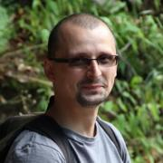
Damian is currently a Technical Support Engineer at Canonical Ltd., working with wide range of Ubuntu and cloud products. Linux and Unix enthusiast since 1997. ZFS enthusiast since 2006. Working as sysadmin and support engineer with Linuxes since 2001. While working at Nexenta Systems, he has deployed, maintained and supported ZFS storage arrays from tens of Gigabytes to hundreds of Terabytes.
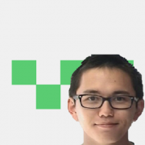
I am a senior studying Computer Science at the University of California, Irvine.
This past summer I had the opportunity to work with {code}, an open source division of Dell EMC. In the process I learned all about Docker and containers.

Mark Wong is a Software Development Engineer at EDB and is a PostgreSQL Major Contributor. He first introduced himself to the PostgreSQL community in 2003 with open source benchmarking kits and performance data. Since then, he has continued to contribute to various aspects of the community such as a Google Summer of Code mentor, Conference Organizer, Portland PostgreSQL Users Group Co-Organizer, PostgreSQL Fundraising Group Member, and a Director on the Board of the United States PostgreSQL...
Steve is a developer working on open source projects: Steve has been active in the Kubernetes and Mesos projects since 2015.
Steve is employed by the Cloud Native Applications business unit at VMware and is co-lead of the Kubernetes IoT and Edge Working Group.
Steve is a volunteer mentor for the Whitney High competitive robotics team. He has been doing home automation since before it was called the internet of things. In his spare time he likes to hang out at the 23b Hackerspace...
Josh Wood’s passion for the rkt container runtime led him to CoreOS, where he is responsible for documentation. When procrastinating, Josh enjoys photographing polydactyl cats and writing short autobiographies.
Software:
a) Operating Systems - Debian, Ubuntu, CentOS, Arch
b) Server & Desktop Applications: OpenACS Community Systems (Project Open and dotLRN packges), Virtualbox, PuppyLinux, AVLinux, Mepis, Sugar OLPC, GIMP Image Editor, SeaMonkey, Scribus DTP, and others
Hardware: AMD, Intel, mobile wifi broadcasting, remo
Web Site content Management
Organizational Capacity Building
Adult Literacy Programs
Communications
Information Technology...
Hunyue Yau from HY Research LLC (http://www.hy-research.com/) is an embedded Linux Consultant, software and hardware developer, and enthusiast with over 20 years of involvement in Linux. He has worked on numerous Linux architectures including x86 and ARM. Areas of interest include sensors, low power and small foot print for mobile, and embedded Linux devices with a focus on low level kernel and hardware details. Prior works include development of one...
Jason is a technical writer and evangelist at Datadog, where he works to inspire developers and ops engineers with the power of metrics and monitoring. Previously, he was the community manager for DevOps & Performance at O’Reilly Media and a software engineer at MongoDB. He’s currently a co-organizer of DevOpsDays Portland and a member of the global DevOpsDays web team. When he’s not speaking at conferences or helping organize them, he likes to spend time on planes “travel hacking” and...

Peter Zaitsev is an entrepreneur and co-founder of Percona. As one of the foremost experts on Open Source strategy and database optimization, Peter leveraged both his technical vision and entrepreneurial skills to grow Percona from a two-person shop to one of the most respected open source companies in the business with staff members more than 350. Now Peter continues as a Board Member & Advisor in a range of open source startups. Peter is a co-author of High Performance MySQL:...
Zhou Zhou is Legal Counsel at the Wikimedia Foundation, which hosts Wikipedia and its sister projects. In his role, he focuses on providing support for products and technology features at the Foundation. Previously, he was an associate at Gibson, Dunn & Crutcher, where he worked on a variety of litigation and transactional issues, mainly in the technology and privacy spaces. He holds a J.D. from Columbia Law School, where he was on the editorial board of the Columbia Science and...
Dmitri has led engineering at a number of organizations, most recently leading the vSphere client team at VMware where he also worked on a variety of related projects. While at VMware he led a substantial refactoring of vSphere and was primarily responsible for the end user experience of a product that generates the majority of VMware’s revenues.
Prior to VMware Dmitri was head of engineering at Opalis. Opalis was purchased by Microsoft and is now Microsoft’s System Center...